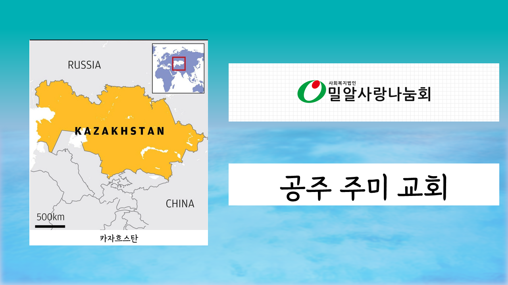
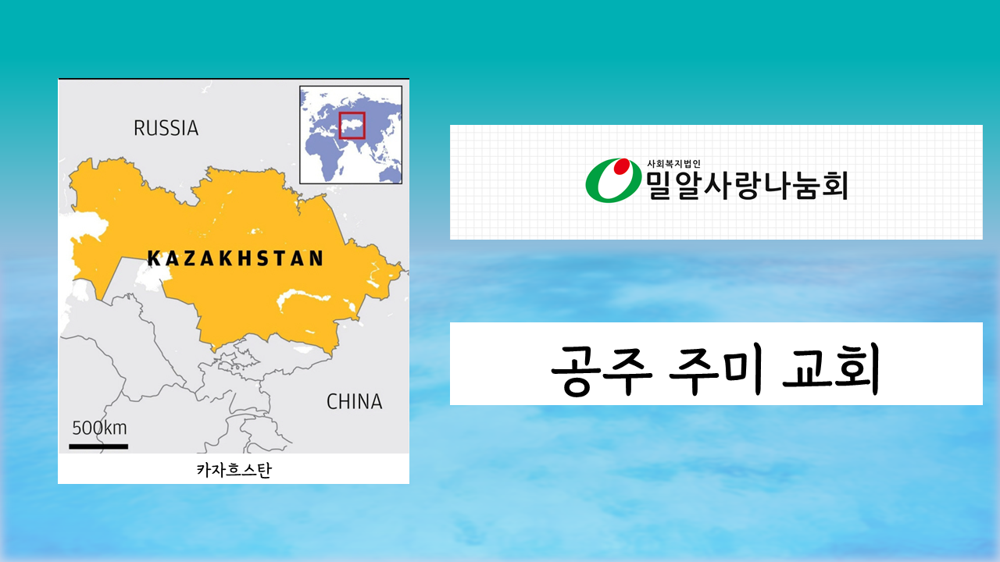

| 예배의 부름 | 인도자 |
|---|---|
| 찬송 | 15장 |
| 신앙고백 | 사도신경 |
| 찬송 | 200장 |
| 기도 |
유순이 권사 최윤태 안수집사 |
| 성경봉독 | 마 4 : 4 (신4) |
| 특송 | 비전찬양대 |
| 교회소식 | 인도자 |
| 봉헌찬송 | 383장 |
| 봉헌기도 | 담임목사 |
| 설교 |
성경으로 삽니다 |
| 폐회송 | 204장 |
| 축도 | 담임목사 |
| 1부 기도 | 이은주 권사 |
|---|---|
| 2부 기도 | 박귀원 장로 |
| 안내위원 | 고승수 안수집사, 신명순 권사 |
|---|---|
| 헌금위원 | 김정명 집사, 이정숙 권사 |
주의 법을 사랑하는 자에게는 큰 평안이 있으니
그들에게 장애물이 없으리이다.
(시편 119:165)

 



충청남도 부여군 부여읍 신기정로 112(군수리 504-1)
온라인헌금: 새마을금고 9002-1946-53117 열린문성결교회
(041)834-3927, 010-9056-9828, jesus37@hanmail.net